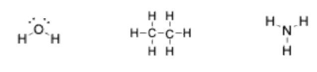
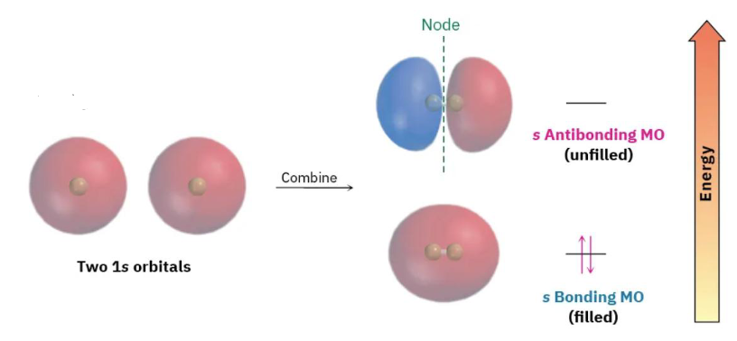
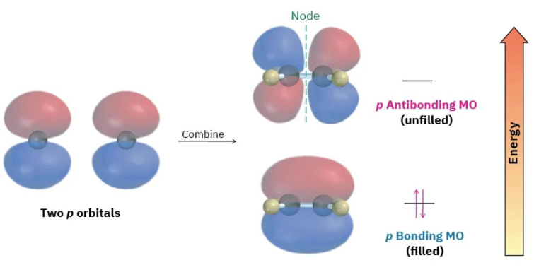
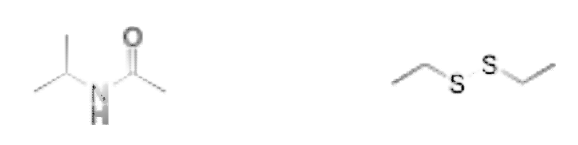
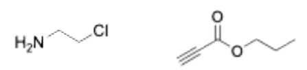
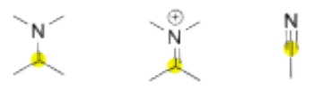

好的，遵照您的要求，我将对您提供的辅导课讲义内容逐段进行最长最详细的中文解释，并保留所有原始内容和格式。
辅导课 1：结构与键合
1 目标与期望
复习和练习讲座概念
灵活的形式——乐于更侧重讲座式复习或练习题
六次课内测验（第一次测验下周进行）
通过电子邮件 amc2525@columbia.edu 联系我
辅导课签到：https://forms.gle/UcMXwwy9MbeNTbiA8
1. 详细解释
这段内容是辅导课的开场白和基本信息介绍。
- “复习和练习讲座概念”: 这句话明确了辅导课（Recitation）的主要目的。在大学课程中，辅导课通常由助教（TA）主持，旨在帮助学生巩固和深化在主讲座（Lecture）上由教授讲解的理论知识。它更侧重于应用和解题，是理论与实践之间的桥梁。
- “灵活的形式——乐于更侧重讲座式复习或练习题”: 这表明助教愿意根据学生的需求调整课程形式。如果学生对某些概念感到困惑，助教可以像讲座一样重新讲解这些知识点；如果学生感觉理论已经掌握，希望提高解题能力，助教则可以带领大家做更多的练习题。这种互动性和灵活性是辅导课的重要特点。
- “六次课内测验（第一次测验下周进行）”: 这是课程考核的重要信息。课内测验（Quiz）是评估学生学习情况的常用方式，通常在辅导课上进行，时间较短，内容集中于近期所学。这里提醒学生，这门课程总共会有六次测验，并且第一次测案就在下周，需要提前准备。
- “通过电子邮件 amc2525@columbia.edu 联系我”: 这提供了助教的联系方式。学生在课后遇到学习问题，或者有关于课程的行政事宜，都可以通过这个邮箱与助教取得联系。
- “辅导课签到”: 这是一个谷歌表单（Google Forms）链接，用于记录学生的出勤情况。在很多大学课程中，辅导课的出勤率可能会计入最终成绩的一部分。
2 第一章概念
I. 八隅体规则 II. 原子轨道的杂化 III. 绘制结构
2. 详细解释
这部分内容概述了本次辅导课将要复习的、来自第一章的三个核心概念。这三个概念是理解有机化学中分子结构与成键的基础。
- I. 八隅体规则 (Octet Rule): 这是化学键合中最基本也是最重要的规则之一。它描述了主族元素（特别是第二周期元素如碳、氮、氧）在形成化合物时，倾向于通过得失电子或共享电子，使其最外层电子（价电子）数达到8个，从而模仿稀有气体的稳定电子构型。这个规则是绘制路易斯结构（Lewis Structures）的基石。
- II. 原子轨道的杂化 (Hybridization of Atomic Orbitals): 这是一个更深入的成键理论，属于价键理论（Valence Bond Theory）的一部分。它解释了为什么像甲烷 () 这样的分子会形成特定的几何形状（如正四面体）。该理论提出，中心原子的价层原子轨道（如一个 轨道和三个 轨道）可以“混合”或“杂化”，形成一组能量相同、形状和方向全新的杂化轨道（如四个 轨道），这些杂化轨道能更有效地与其它原子形成化学键，从而决定了分子的空间构型和键角。
- III. 绘制结构 (Drawing Structures): 这是有机化学的一项基本技能。学习如何将一个分子的化学式转化为二维或三维的结构表示形式至关重要。这包括绘制路易斯结构（显示所有价电子、孤对电子和化学键）、骨架结构（用线条代表碳-碳键，并省略大部分氢原子）等。准确绘制结构是预测分子性质和反应性的第一步。
3 八隅体规则
八隅体规则：稳定的分子由价电子壳层中含有8个电子（氢为2个）的原子组成
共享电子 = 键
非共享电子 = 孤对电子
注意：此规则并非绝对

3. 详细解释
这一节详细阐述了“八隅体规则”。
- 定义: “八隅体规则”的核心思想是，主族元素原子在形成化学键时，倾向于使其价电子层（最外层电子层）达到8个电子的饱和状态，这被称为“八隅体”。这是一种非常稳定的电子排布，与同周期的稀有气体元素（如氖、氩）相同。一个重要的例外是氢原子，它只有一个电子层，该电子层最多只能容纳2个电子，因此氢在成键时倾向于达到2个价电子的状态，模仿稀有气体氦（Helium）的电子构型。
- 共享电子与非共享电子:
- 共享电子 (Shared electrons) = 键 (Bond): 当两个原子通过共用电子对形成共价键时，这对电子同时属于两个原子。在计算每个原子的价电子数以判断是否满足八隅体规则时，这些共享电子对需要被计入两个成键原子的价电子层。例如，一个单键由2个共享电子组成，一个双键由4个共享电子组成。
- 非共享电子 (Unshared electrons) = 孤对电子 (Lone pair): 这些是未参与成键的价电子，它们成对存在于单个原子上。在计算价电子数时，孤对电子完全属于该原子。
- 图片示例:
- 甲烷 (): 中心碳原子与四个氢原子形成四个单键。每个单键包含2个共享电子。因此，碳原子的价电子数为 个，满足八隅体规则。每个氢原子有1个单键，价电子数为2个，满足其“二隅体”规则。
- 氨 (): 中心氮原子与三个氢原子形成三个单键，并拥有一对孤对电子。氮原子的价电子数为 个，满足八隅体规则。
- 水 (): 中心氧原子与两个氢原子形成两个单键，并拥有两对孤对电子。氧原子的价电子数为 个，满足八隅体规则。
- 规则的局限性: “此规则并非绝对”是一个非常重要的提醒。存在许多不遵守八隅体规则的稳定分子，例如：
- 缺电子分子 (Incomplete Octet): 中心原子价电子少于8个，如三氟化硼 () 中的硼原子只有6个价电子。
- 超价分子 (Expanded Octet): 中心原子价电子超过8个，这通常发生在第三周期及以后的元素，因为它们有空的 轨道可以容纳更多电子，如六氟化硫 () 中的硫原子有12个价电子。
- 奇电子分子 (Odd-electron molecules): 分子总价电子数为奇数，导致必然有原子无法满足八隅体规则，如一氧化氮 ()。
4 原子轨道
轨道描述电子的分布
s 轨道 - 能量最低，球形对称
p 轨道 - 能量高于 s 轨道，有节面
轨道被组织成电子层（能级）
 一个 s 轨道
一个 s 轨道
 一个 轨道
一个 轨道
 一个 轨道
一个 轨道
 一个 轨道
一个 轨道
4. 详细解释
这一节介绍了原子轨道的基本概念，这是理解化学键形成的基础。
- 轨道定义: “轨道描述电子的分布”是对原子轨道的简化定义。在量子力学中，原子轨道是一个数学函数，描述了在原子核周围特定区域内发现一个电子的概率。它不是电子运行的固定轨迹，而是一个“电子云”或概率分布图。
- s 轨道:
- 能量: 在同一个电子层（能级，用主量子数 表示）中， 轨道的能量是最低的。
- 形状: 轨道呈球形对称（spherically symmetric）。这意味着在距离原子核任意相等距离的球面上，发现电子的概率是相同的。图中展示的是最简单的 轨道。
- p 轨道:
- 能量: 在同一个电子层中， 轨道的能量比 轨道高。
- 形状: 轨道呈哑铃形（dumbbell-shaped），由两个“瓣”（lobes）组成，原子核位于两个瓣的交汇处。
- 节面 (Nodal Plane): 在原子核所在的位置，发现电子的概率为零，这个平面被称为节面。电子云分布在节面的两侧。
- 方向性: 从第二个电子层 () 开始，每个电子层都有三个能量相同但空间取向相互垂直的 轨道，分别沿着 x、y、z 轴分布，记为 、 和 。图片清晰地展示了这三个 轨道的空间取向。
- 电子层 (能级): 原子轨道是根据能量高低组织成不同的电子层的。主量子数 的第一电子层只有一个 轨道。 的第二电子层有一个 轨道和三个 轨道。这些轨道的能量、形状和空间排布，决定了原子的电子排布和化学性质。
5 杂化原子轨道
价键理论：原子轨道杂化形成能够键合的杂化原子轨道
输入轨道的数量 = 输出轨道的数量
= 一个 s 轨道 + 一个 p 轨道
= 一个 s 轨道 + 两个 p 轨道
= 一个 s 轨道 + 三个 p 轨道
氢原子通过其 s 轨道形成单键
价键理论：当两个单占据的轨道建设性重叠时，形成共价键
5. 详细解释
本节介绍了价键理论中的核心概念——原子轨道杂化。
- 价键理论 (Valence Bond Theory): 这是一种解释共价键形成的理论。它认为，共价键是由两个原子各自的价层原子轨道发生重叠而形成的。为了解释实验观察到的分子几何形状（如甲烷的109.5°键角），价键理论引入了杂化的概念。
- 杂化 (Hybridization): 这是指一个原子内部，能量相近的不同类型价层原子轨道（如 轨道和 轨道）进行线性组合，重新分配能量和空间方向，形成一组新的、能量完全相同的杂化轨道的过程。这些杂化轨道在成键时比原来的纯原子轨道能形成更强的键，并能更好地解释分子的空间结构。
- 轨道守恒: “输入轨道的数量 = 输出轨道的数量”是杂化过程的一个基本原则。参与杂化的原子轨道有多少个，就会生成多少个杂化轨道。
- 常见的杂化类型:
- 杂化: 由一个 轨道和三个 轨道混合而成，形成四个等价的 杂化轨道。这四个轨道在空间中呈正四面体（tetrahedral）分布，相互之间的夹角约为 109.5°。这是形成四个单键的碳原子的典型杂化方式，如甲烷 ()。
- 杂化: 由一个 轨道和两个 轨道混合而成，形成三个等价的 杂化轨道。这三个轨道在同一平面上，呈平面三角形（trigonal planar）分布，相互之间的夹角约为 120°。原子还有一个未参与杂化的 轨道，它垂直于这个平面。这是形成双键的碳原子的典型杂化方式，如乙烯 ()。
- 杂化: 由一个 轨道和一个 轨道混合而成，形成两个等价的 杂化轨道。这两个轨道在同一直线上，呈线性（linear）分布，相互之间的夹角为 180°。原子还有两个未参与杂化的 轨道，它们相互垂直且垂直于 轨道的轴线。这是形成三键或两个双键的碳原子的典型杂化方式，如乙炔 ()。
- 氢原子的成键: 氢原子只有一个 轨道，它不进行杂化，总是直接用其球形的 轨道与其它原子的轨道（纯原子轨道或杂化轨道）重叠形成单键。
- 共价键的形成: 价键理论的核心观点是，当两个原子各自提供一个含有单个电子（单占据）的原子轨道，并且这两个轨道以“建设性”的方式（即电子波函数同相叠加）在空间中发生重叠时，就形成了一个稳定的共价键。电子对被吸引到两个原子核之间的区域，从而将两个原子连接在一起。
6 轨道与键合
分子轨道理论：原子轨道组合形成由电子占据的分子轨道
Sigma (σ) 键：头碰头重叠，圆柱形对称
Pi (π) 键：相邻原子上平行 p 轨道之间的重叠

两个 1s 轨道

两个 p 轨道
6. 详细解释
这一节介绍了两种基本类型的共价键：Sigma (σ) 键和 Pi (π) 键。
- 分子轨道理论 (Molecular Orbital Theory): 这里简要提及了另一种成键理论。与价键理论将电子定域在两个原子之间不同，分子轨道理论认为，分子中的所有原子的原子轨道会组合成一系列覆盖整个分子的分子轨道。电子再填充到这些分子轨道中。虽然这是一个更精确的理论，但在入门有机化学中，通常更侧重于用价键理论的 σ/π 键模型来描述键合，因为它更直观。
- Sigma (σ) 键:
- 形成方式: 通过两个轨道的“头对头”（head-to-head）或“轴向”（axial）重叠形成。这种重叠发生在连接两个原子核的轴线上。
- 对称性: σ 键的电子云密度沿键轴呈圆柱形对称。这意味着如果沿着键轴旋转，电子云的分布看起来是一样的。这种对称性允许 σ 键自由旋转而不会断裂。
- 例子: 可以由 轨道重叠（如 分子，见上图）、 轨道重叠、或 轨道头对头重叠，以及任何杂化轨道之间的重叠形成。
- 基本特征: 所有单键都是 σ 键。任何多重键（双键或三键）中都包含且仅包含一个 σ 键。 σ 键是构成化学键的骨架，通常比 π 键更强。
- Pi (π) 键:
- 形成方式: 通过两个相邻原子上、未参与杂化的、相互平行的 轨道的“肩并肩”（side-by-side）或“侧向”（lateral）重叠形成。
- 对称性: π 键的电子云密度分布在键轴的上方和下方（或前方和后方），在键轴所在的平面（节面）上电子密度为零。
- 例子: 上图展示了两个平行的 轨道侧向重叠形成一个 π 键。
- 基本特征: π 键只存在于双键和三键中。 一个双键由一个 σ 键和一个 π 键组成。一个三键由一个 σ 键和两个 π 键组成。由于侧向重叠不如头对头重叠有效，π 键通常比 σ 键弱。π 键的存在限制了键的旋转，因为旋转会破坏 轨道的平行排列，从而破坏 π 键。这是产生顺反异构（cis-trans isomerism）的原因。
7 练习 - 八隅体规则
对于以下经验式，绘制所有可能遵守八隅体规则的分子的路易斯结构：
对于以下骨架结构，假设每个原子都遵守八隅体规则，画出氢原子和孤对电子

7. 详细解释
这一部分是练习题，旨在应用八隅体规则来绘制和完善分子结构。
问题一：绘制 的所有路易斯结构
这是一个典型的绘制同分异构体（constitutional isomers）路易斯结构的问题。
解题步骤：
-
计算总价电子数:
- 碳 (C) 在第14族，有4个价电子。。
- 氢 (H) 在第1族，有1个价电子。。
- 氧 (O) 在第16族，有6个价电子。。
- 总价电子数 = 个电子，即10对电子。
-
确定可能的原子连接方式（骨架）:
- 氢原子只能形成一个键，所以它总是在分子的末端。
- 碳和氧可以形成多个键，是骨架的组成部分。
- 两种可能的重原子骨架是：C-C-O 或 C-O-C。
-
绘制结构并分配电子:
-
可能性 1: C-C-O 骨架（乙醇, Ethanol）
-
连接骨架：C-C-O。
-
连接氢原子：最常见的方式是将氢原子均匀分布，形成 。
-
画出所有单键（8个单键：1个C-C，5个C-H，1个C-O，1个O-H）。这用掉了 个价电子。
-
剩余电子： 个电子（2对）。
-
将剩余电子作为孤对电子分配给最缺电子且电负性最强的原子（氧），以满足其八隅体。氧原子目前有2个键（4个电子），需要4个电子（2对孤对电子）来满足八隅体。正好用完所有剩余电子。
-
检查八隅体：
- 第一个碳：4个单键，8个电子。满足。
- 第二个碳：4个单键，8个电子。满足。
- 氧：2个单键 + 2对孤对电子 = 个电子。满足。
- 每个氢：1个单键，2个电子。满足。
-
最终结构：
H H | | H-C - C - O - H | | H H (氧上有两对孤对电子)
-
-
可能性 2: C-O-C 骨架（二甲醚, Dimethyl Ether）
-
连接骨架：C-O-C。
-
连接氢原子：将6个氢原子平均分配给两个碳，形成 。
-
画出所有单键（8个单键：6个C-H，2个C-O）。这也用掉了 个价电子。
-
剩余电子： 个电子（2对）。
-
将剩余电子分配给中心的氧原子，以满足其八隅体。氧原子目前有2个键（4个电子），需要4个电子（2对孤对电子）。
-
检查八隅体：
- 每个碳：4个单键，8个电子。满足。
- 氧：2个单键 + 2对孤对电子 = 个电子。满足。
- 每个氢：1个单键，2个电子。满足。
-
最终结构：
H H | | H-C - O - C-H | | H H (氧上有两对孤对电子)
-
-
结论： 有两种符合八隅体规则的结构异构体：乙醇和二甲醚。
问题二：为骨架结构添加氢原子和孤对电子
解题步骤： 逐个分析图中的非氢原子，确保它们都满足八隅体规则（碳通常形成4个键，氮通常形成3个键和1对孤对电子，氧通常形成2个键和2对孤对电子）。
- 羰基氧 (C=O): 该氧原子形成一个双键（包含4个电子）。为满足八隅体（8个电子），它需要 个非共享电子，即2对孤对电子。
- 羰基碳 (C=O): 该碳原子已显示出1个双键和2个单键，总共4个键。它已经满足八隅体，因此不需要添加氢原子或孤对电子。
- 酰胺氮 (N): 该氮原子已显示出3个单键。为满足八隅体，它需要 个非共享电子，即1对孤对电子。
- 环内的氮 (N): 该氮原子已显示出1个双键和1个单键（共6个电子）。为满足八隅体，它需要 个非共享电子，即1对孤对电子。
- 所有其他碳原子: 检查每个碳原子已有的键数，然后添加足够的氢原子使其总键数达到4。
- 与羰基相连的 旁边的碳：已显示3个键，需加1个氢。
- 六元环中与氮和双键相连的碳：已显示4个键，不需加氢。
- 六元环中双键的另一个碳：已显示3个键，需加1个氢。
- 六元环中最下方的碳：已显示2个键，需加2个氢。
- 连接两个环的碳：已显示4个键，不需加氢。
- 五元环中与氮相邻的碳：已显示3个键，需加1个氢。
- 五元环中另一个碳：已显示2个键，需加2个氢。
- 甲基：已明确画出，无需操作。
最终完善的结构图如下：
8 练习 - 结构与杂化轨道
对于以下结构：画出所有隐含的氢原子/孤对电子，并标出每个原子的杂化类型

预测以下所示原子形成的键角：

画出乙烯（）的结构，包括所有成键轨道
8. 详细解释
这部分练习题要求综合运用结构绘制、杂化理论和价层电子对互斥理论（VSEPR）来分析分子。
问题一：添加氢原子/孤对电子并标出杂化类型
这是上一个问题的延续，现在需要为每个重原子（非氢原子）确定杂化类型。 判断杂化类型的捷径：计算一个原子周围的“电子域”数量（一个电子域可以是一个单键、双键、三键或一对孤对电子）。
- 4 个电子域 杂化
- 3 个电子域 杂化
- 2 个电子域 杂化
对结构中每个重原子进行分析 (参考上题已完善的结构)：
- 羰基氧 (C=O): 1个双键 + 2对孤对电子 = 3个电子域 杂化。
- 羰基碳 (C=O): 1个双键 + 2个单键 = 3个电子域 杂化。
- 酰胺氮 (N): 3个单键 + 1对孤对电子 = 4个电子域 杂化。（注意：在某些情况下，如果孤对电子参与共轭，酰胺氮可能呈 杂化，但基于基本规则判断为 ）。
- 环内的氮 (N): 1个双键 + 1个单键 + 1对孤对电子 = 3个电子域 杂化。
- 所有形成4个单键的碳原子 (例如甲基碳、六元环最下方的碳、五元环中的 碳): 4个单键 = 4个电子域 杂化。
- 所有参与双键的碳原子: 1个双键 + 2个单键 = 3个电子域 杂化。
问题二：预测键角
键角主要由中心原子的杂化类型和孤对电子的数量决定（VSEPR理论）。
- 杂化: 理想键角为 109.5°。每增加一对孤对电子，斥力增大，键角会略微减小。
- 杂化: 理想键角为 120°。
- 杂化: 理想键角为 180°。
分析图中箭头所指的原子:
- 箭头指向醚键的氧原子 (O): 该氧原子形成2个单键，并有2对孤对电子。总共4个电子域，为 杂化。其电子几何构型是四面体。由于孤对电子的斥力大于成键电子对，C-O-C 的键角会被压缩，小于 109.5°（类似于水分子中的键角，约为 104.5°）。
- 箭头指向羰基碳原子 (C=O): 该碳原子形成1个双键和2个单键。总共3个电子域，为 杂化。其几何构型是平面三角形。因此，其周围的键角（O=C-C 和 C-C-C）约等于 120°。
- 箭头指向胺基的氮原子 (N): 该氮原子形成3个单键和1对孤对电子。总共4个电子域，为 杂化。其电子几何构型是四面体，分子几何构型是三角锥形。由于孤对电子的斥力，C-N-C 键角会被压缩，小于 109.5°（类似于氨分子中的键角，约为 107°）。
问题三：画出乙烯（）的成键轨道图
解题步骤:
- 路易斯结构与杂化: 乙烯的结构是 H₂C=CH₂。每个碳原子连接3个其它原子（2个H，1个C），形成一个双键，没有孤对电子。因此，每个碳原子都是 杂化。
- 杂化后的轨道: 每个碳原子有三个 杂化轨道（在同一平面内，夹角120°）和一个垂直于该平面的未杂化 轨道。
- 绘制 σ 键骨架:
- C-C σ 键: 两个碳原子各用一个 杂化轨道沿轴向“头对头”重叠，形成一个 C-C σ 键。
- C-H σ 键: 每个碳原子剩下的两个 杂化轨道，分别与四个氢原子的 轨道“头对头”重叠，形成四个 C-H σ 键。
- 整个 σ 键骨架（包括所有6个原子）位于同一个平面上。
- 绘制 π 键:
- 两个碳原子上各有一个未杂化的 轨道，它们相互平行，且垂直于 σ 键所在的平面。
- 这两个平行的 轨道发生“肩并肩”的侧向重叠，在 σ 键平面的上方和下方形成电子云，构成一个 π 键。
最终的轨道图如下所示:
图解说明:
- 平面内的部分是 σ 键骨架:
- 中心的 C-C σ 键由两个 轨道重叠形成。
- 四个 C-H σ 键由碳的 轨道和氢的 轨道重叠形成。
- 垂直于平面的部分是 π 键:
- 由两个碳上相互平行的 轨道侧向重叠形成，电子云分布在平面的上方和下方。